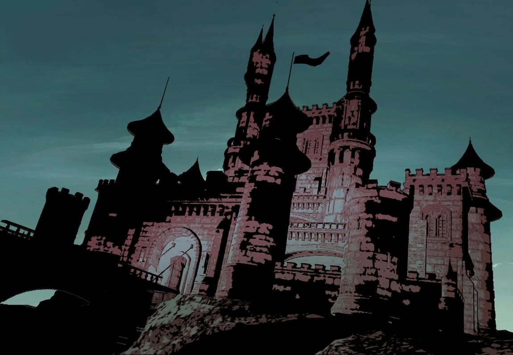

<!DOCTYPE html>
<html lang="en">
<head>
    <meta charset="UTF-8">
    <meta name="viewport" content="width=device-width, initial-scale=1.0">
    <title>Latverian State Archives | Level 9 Clearance</title>
    
    <link href="https://fonts.googleapis.com/css2?family=Share+Tech+Mono&family=UnifrakturMaguntia&display=swap" rel="stylesheet">
    <link rel="stylesheet" href="style.css">

    <script crossorigin src="https://unpkg.com/react@18/umd/react.production.min.js"></script>
    <script crossorigin src="https://unpkg.com/react-dom@18/umd/react-dom.production.min.js"></script>
    <script src="https://unpkg.com/@babel/standalone/babel.min.js"></script>
</head>
<body>
    
    <div id="root"></div>

    <script type="text/babel">
        const { useState } = React;

        function LatverianOS() {
            const [activeTab, setActiveTab] = useState('biography');

            return (
                <React.Fragment>
                    <div className="scanline-overlay"></div>

                    <header className="state-header">
                        <div className="doom-crest"><span className="crest-icon">VVD</span></div>
                        <h1 className="sovereign-title">LATVERIAN STATE ARCHIVES</h1>
                        <p className="clearance-level">RESTRICTED ACCESS: DOOM DICTATES</p>
                        
                        <nav className="military-nav">
                            <ul>
                                <li>
                                    <button 
                                        className={activeTab === 'biography' ? 'active' : ''} 
                                        onClick={() => setActiveTab('biography')}
                                    >I. Biography</button>
                                </li>
                                <li>
                                    <button 
                                        className={activeTab === 'history' ? 'active' : ''} 
                                        onClick={() => setActiveTab('history')}
                                    >II. History of Latveria</button>
                                </li>
                                <li>
                                    <button 
                                        className={activeTab === 'decrees' ? 'active' : ''} 
                                        onClick={() => setActiveTab('decrees')}
                                    >III. Sovereign Decrees</button>
                                </li>
                            </ul>
                        </nav>
                    </header>

                    <main className="database-container">
                        
                        {activeTab === 'biography' && (
                            <section className="classified-section active-section">
                                <h2 className="section-title">SUBJECT: VICTOR VON DOOM</h2>
                                <article className="data-block">
                                    <div className="profile-grid">
                                        <div className="profile-image-placeholder">
                                            
                                        </div>
                                        <div className="profile-stats">
                                            <ul>
                                                <li><strong>TITLE:</strong> Supreme Monarch of Latveria</li>
                                                <li><strong>STATUS:</strong> Sovereign / God Emperor</li>
                                                <li><strong>THREAT LEVEL:</strong> Omega</li>
                                            </ul>
                                        </div>
                                    </div>
                                    <div className="text-content">
                                        <p>"I was a god, Valeria. I found it... beneath me."</p>
                                        <p>Born in a Romani camp outside the Latverian capital, Victor Von Doom rose from an outcast to the absolute ruler of his nation.</p>
                                    </div>
                                </article>
                            </section>
                        )}

                        {activeTab === 'history' && (
                            <section className="classified-section active-section">
                                <h2 className="section-title">SUBJECT: HISTORY OF LATVERIA</h2>
                                <article className="data-block">
                                    <div className="location-image">
                                        
                                    </div>
                                    <div className="text-content">
                                        
                                        <h3 className="epoch-title">I. THE 14TH - 16TH CENTURY</h3>
                                        <p>During the 14th century, along with Rudolfo Haasen, Karl Haasen captured territory from Transylvania and founded Latveria. Rudolfo became its first king, King Rudolfo I, and Karl became royalty Baron Karl Hassen.</p>
                                        <p>After the death of Baron Karl Haasen III in 1447, Vlad Draasen ascended to the throne of Latveria, and his difficult rule divided the country until 1544, when the Bolgorad Treaties restored the Haasen bloodline. In 1588, Count Sabbat and King Stefan I began the construction of a castle (which would become Castle Doom) and a second was constructed in 1593 (now the Citadel of Doom).</p>

                                        <h3 className="epoch-title">II. EARLY 20TH CENTURY: WORLD WAR II</h3>
                                        <p>During World War II, the Fortunov family retained control on the throne. The latest king was Vladimir Vassily Gonereo Tristian Mangegi Fortunov. Even then, the country was a technological leader and Baron Strucker solicited their help in exchange for not overrunning the country with the Nazis.</p>
                                        <p>Latveria forged an alliance with Symkaria, and the two nations resisted Strucker's invading forces. Although Latveria was spared from the Nazi war machine, the Fortunovs took notes on leadership from Adolf Hitler.</p>

                                        <h3 className="epoch-title">III. THE MODERN AGE: REIGN OF FORTUNOV</h3>
                                        <p>After the war, Fortunov became an even more ruthless leader, persecuting the local Romani clans. One of the clans, the Zefiro, had one of the greatest healers in Europe: Werner von Doom and his wife, Cynthia, a practitioner of magic. They gave birth to their son Victor shortly before Cynthia's death.</p>
                                        <p>Cynthia became fed up with the constant persecution of her people and made a pact with the demon-lord Mephisto for more power in exchange for her soul. The spell gave her power and she wiped out an entire town. She later fell by one of the King's soldiers.</p>

                                        <h3 className="epoch-title">IV. DOOMSTADT & EXILE</h3>
                                        <p>Years later, Werner was asked by the King to try and cure his wife of cancer. When he failed, he took himself and Victor into the Latverian Alps to flee the King's retribution. By the time Boris and the others found them, Werner had suffered severe frostbite and later died of exposure.</p>
                                        <p>Furious over the death of his parents, Victor found his mother's trunk of arcane objects and began studying both magic and science. He was later asked to study at State University in the United States, where he became obsessed with contacting the afterlife, resulting in an accident that scarred his face.</p>

                                        <h3 className="epoch-title">V. THE REIGN OF DOOM</h3>
                                        <p>He later returned to Latveria in an iron suit, calling himself Doctor Doom. With his advanced skills in science and sorcery, he gathered his people together and overthrew the King, killing him and taking over Latveria for his own.</p>
                                        <p>During Doom's long rule of the country, the Zefiro were no longer persecuted and likely dispersed among the general population. Latveria entered an era of absolute order and technological supremacy.</p>

                                    </div>
                                </article>
                            </section>
                        )}

                        {activeTab === 'decrees' && (
                            <section className="classified-section active-section">
                                <h2 className="section-title">SUBJECT: SOVEREIGN DECREES</h2>
                                <article className="data-block">
                                    <div className="text-content">
                                        <p>Ignorance of the law is not an excuse. It is a crime.</p>
                                        <ul style={{ listStyleType: 'square', marginLeft: '20px', lineHeight: '1.8' }}>
                                            <li><strong>DECREE 001:</strong> The word of Doom is absolute.</li>
											<li><strong>DECREE 002:</strong> All authority within Latveria derives from Doom.</li>
											<li><strong>DECREE 003:</strong> Loyalty to Doom is loyalty to Latveria.</li>
											<li><strong>DECREE 004:</strong> Treason against Doom shall be punished without mercy.</li>
											<li><strong>DECREE 005:</strong> Doom alone determines the law of Latveria.</li>
											<li><strong>DECREE 006:</strong> No citizen shall raise arms against the throne.</li>
											<li><strong>DECREE 007:</strong> The borders of Latveria are inviolate.</li>
											<li><strong>DECREE 008:</strong> All advanced technology within Latveria belongs to Doom.</li>
											<li><strong>DECREE 009:</strong> Scientific progress shall serve the glory of Latveria.</li>
											<li><strong>DECREE 010:</strong> The enemies of Doom are the enemies of the state.</li>
											<li><strong>DECREE 011:</strong> Doom’s justice is swift and final.</li>
											<li><strong>DECREE 012:</strong> All officials serve at the pleasure of Doom.</li>
											<li><strong>DECREE 013:</strong> Corruption within the state shall be eradicated.</li>
											<li><strong>DECREE 014:</strong> Doom shall protect the citizens of Latveria.</li>
											<li><strong>DECREE 015:</strong> Foreign interference in Latverian affairs shall not be tolerated.</li>
											<li><strong>DECREE 016:</strong> Order is the foundation of Latverian prosperity.</li>
											<li><strong>DECREE 017:</strong> Knowledge that threatens Latveria shall be sealed.</li>
											<li><strong>DECREE 018:</strong> Latveria shall bow to no foreign crown.</li>
											<li><strong>DECREE 019:</strong> The machines of Doom safeguard the realm.</li>
											<li><strong>DECREE 020:</strong> Conspiracies against the throne shall be extinguished.</li>
											<li><strong>DECREE 021:</strong> Latverian soil is sacred under the rule of Doom.</li>
											<li><strong>DECREE 022:</strong> The security of the state supersedes personal ambition.</li>
											<li><strong>DECREE 023:</strong> No weapon shall be wielded against Latveria.</li>
											<li><strong>DECREE 024:</strong> The prosperity of the people reflects the will of Doom.</li>
											<li><strong>DECREE 025:</strong> Doom alone speaks for Latveria before the world.</li>
											<li><strong>DECREE 026:</strong> Loyalty shall be honored and betrayal condemned.</li>
											<li><strong>DECREE 027:</strong> All national defense falls under Doom’s command.</li>
											<li><strong>DECREE 028:</strong> Latverian sovereignty is eternal.</li>
											<li><strong>DECREE 029:</strong> Foreign spies shall be detained and judged by Doom.</li>
											<li><strong>DECREE 030:</strong> No power exceeds the authority of Doom.</li>
											<li><strong>DECREE 031:</strong> Doom’s rule ensures peace within Latveria.</li>
											<li><strong>DECREE 032:</strong> The wisdom of Doom guides the nation.</li>
											<li><strong>DECREE 033:</strong> Those who serve Latveria serve Doom.</li>
											<li><strong>DECREE 034:</strong> The law exists to preserve order.</li>
											<li><strong>DECREE 035:</strong> Sabotage of state infrastructure is treason.</li>
											<li><strong>DECREE 036:</strong> Latverian defense technologies remain state secrets.</li>
											<li><strong>DECREE 037:</strong> Doom commands the guardians of Latveria.</li>
											<li><strong>DECREE 038:</strong> Unauthorized experimentation with dangerous technology is forbidden.</li>
											<li><strong>DECREE 039:</strong> The safety of Latverian citizens is paramount.</li>
											<li><strong>DECREE 040:</strong> Doom tolerates no disorder within his realm.</li>
											<li><strong>DECREE 041:</strong> The state shall reward those who advance Latveria.</li>
											<li><strong>DECREE 042:</strong> Any plot against the throne is a plot against the nation.</li>
											<li><strong>DECREE 043:</strong> Latveria’s defenses shall remain vigilant.</li>
											<li><strong>DECREE 044:</strong> Doom’s decree overrides all lesser statutes.</li>
											<li><strong>DECREE 045:</strong> The prosperity of Latveria shall endure.</li>
											<li><strong>DECREE 046:</strong> Foreign agents shall not operate within Latveria.</li>
											<li><strong>DECREE 047:</strong> The state maintains control of strategic industries.</li>
											<li><strong>DECREE 048:</strong> Doom’s vision shapes Latveria’s future.</li>
											<li><strong>DECREE 049:</strong> No citizen shall undermine the stability of the realm.</li>
											<li><strong>DECREE 050:</strong> The reign of Doom secures the destiny of Latveria.</li>
                                        </ul>
                                    </div>
                                </article>
                            </section>
                        )}

                    </main>

                    <footer className="state-footer">
                        <p>ALL HAIL DOOM. UNAUTHORIZED ACCESS WILL BE MET WITH LETHAL FORCE.</p>
                        <p className="copyright">© 2026 Ministry of Information, Latveria.</p>
                    </footer>

                </React.Fragment>
            );
        }

        const root = ReactDOM.createRoot(document.getElementById('root'));
        root.render(<LatverianOS />);
    </script>
</body>
</html>